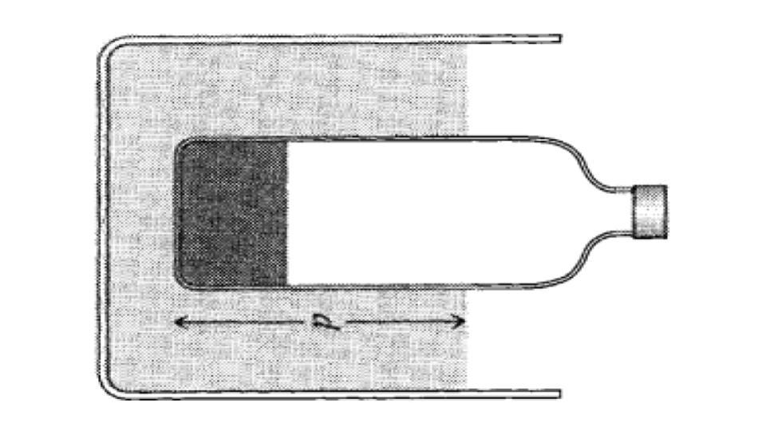

Classical Mechanics 5-2
We are going to talk about SHM.

We are going to talk about SHM.
We can use a block and a spring to give an example.

We all know that: \(\ \ m\ddot{x} = F_{x} = -kx \)
We can rewrirw it: \( \ddot{x} = -\frac{k}{m} x = -\omega^2 x \) There is a new symbol:\(\ \ \omega =\sqrt\frac{k}{m}\)
Look at \(\ \ m\ddot{x} = F_{x} = -kx \)
It is a homogeneous differential equation
Recall Example 1.2:


We can use exponential now.
$$ x(t) = C_1 e^{i\omega t} + C_2 e^{-i\omega t} $$
It is called the superposition principle.
\(B_1 = C_1 + C_2 \\ B_2 = i(C_1 - C_2) \)
By substituing, it would be: \( x(t) = B_1 \cos(\omega t) + B_2 \sin(\omega t)\)
X(0)=\(\ B_1\) and \(\omega B_2=V_o\)
If \(x=x_o\) at rest \(v=v_o\), we can get: \(\ x(t) = x_0 \cos(\omega t)\)
If \(x_0=0\) at t=0, we can get: \(x(t) = \frac{V_0}{\omega} \sin(\omega t) \)
The period is: \(\tau = \frac{2\pi}{\omega} = 2\pi\sqrt{\frac{m}{k}}\)
The last solution is hard to solve because of 2 conditions.We can just combine it with cosine.

\(x(t) = A \left[ \frac{B_1}{A} \cos(\omega t) + \frac{B_2}{A} \sin(\omega t) \right]\\ = A [\cos \delta \cos(\omega t) + \sin \delta \sin(\omega t)]\\ = A \cos(\omega t - \delta) \)
We can review the relationship between coefficients:
\(C_1 = \frac{1}{2} (B_1 - i B_2) \quad \text{and} \quad C_2 = \frac{1}{2} (B_1 + i B_2) \)They are the complex conjugate of each other.
\(C_2=C_1^{*} \\ x(t) = C_1{e^{i\omega t}}+C_1^{*}{e^{i\omega t}} \\ x(t) = 2 R e{C_1 e^{i\omega t}} \\ C = 2C_1, C = B_1 - iB_2 = Ae^{-i\delta} \\ x(t) = R e{Ce^{i\omega t}} = Re{Ae^{i(\omega t - \delta)}} \)



MENU